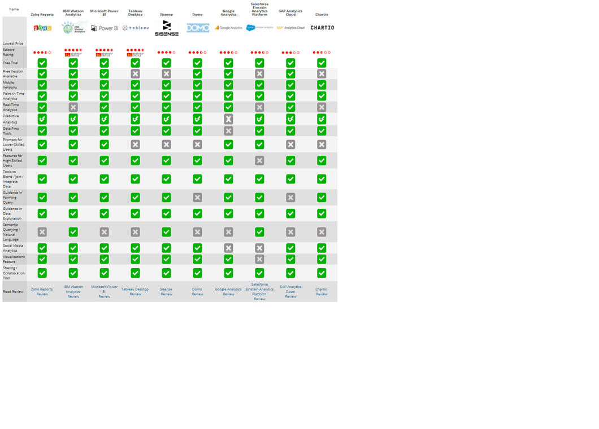

Analytics Beyond Spreadsheets is the term "self-service business intelligence (BI) tools" makes you think you'll be using spreadsheets for your data analysis and graphing needs, then you're not alone. While Microsoft Excel and other spreadsheets have existed now for many years, spreadsheets aren't always the right tools for many BI tasks. Creating charts in Excel is often a frustrating hit-or-miss proposition because you don't always know what data you are trying to show at first. You also don't always begin with the right kind of data and oftentimes you don't even know how to interact with the spreadsheet to show your results in the best possible circumstances.
Spreadsheets also fall down when the data isn't well-structured or can't be sorted out in neat rows and columns. And, if you have millions of rows or very sparse matrices, then the data in a spreadsheet can be painful to enter and it can be hard to visualize your data. Spreadsheets also have issues if you are trying to create a report that spans multiple data tables or that mixes in Structured Query Language (SQL)-based databases, or when multiple users try to maintain and collaborate on the same spreadsheet.
A spreadsheet containing up-to-the-minute data can also be a problem, particularly if you have exported graphics that need to be refreshed when the data changes. Finally, spreadsheets aren't good for data exploration; trying to spot trends, outlying data points, or counterintuitive results is difficult when what you are looking for is often hidden in a long row of numbers.
While spreadsheets and self-service BI tools both make use of tables of numbers, they are really acting in different arenas with different purposes. A spreadsheet is first and foremost a way to store and display calculations. While some spreadsheets can create very sophisticated mathematical models, at their core it is all about the math more than the model itself.
WHAT IS BUSINESS INTELLIGENCE?
Business intelligence (BI) is an umbrella term meant to cover all of the activities necessary for a company to turn raw information into actionable knowledge. In other words, it's a company's efforts to understand what it knows and what it doesn't know of its own existence and operations. The ultimate goal is being able to increase profits and sharpen its competitive edge.
Framed that way, BI as a concept has been around as long as business. But that concept has evolved from early basics [like Accounts Payable (AP) and Accounts Receivable reports and customer contact and contract information] to much more sophisticated and nuanced information. This information ranges across everything from customer behaviors to IT infrastructure monitoring to even long-term fixed asset performance. Separately tracking such metrics is something most businesses can do regardless of the tools employed. Combining them, especially disparate results from metrics normally not associated with one another, into understandable and actionable information, well, that's the art of BI. The future of BI is already shaping up to simultaneously broaden the scope and variety of data used and to sharpen the micro-focus to ever finer, more granular levels.
BI software has been instrumental in this steady progression towards more in-depth knowledge about the business, competitors, customers, industry, market, and suppliers, to name just a few possible metric targets. But as businesses grow and their information stores balloon, the capturing, storing, and organizing of information becomes too large and complex to be entirely handled by mere humans. Early efforts to do these tasks via software, such as customer relationship management (CRM) and enterprise resource planning(ERP), led to the formation of "data silos" wherein data was trapped and useful only within the confines of certain operations or software buckets. This was the case unless IT took on the task of integrating various silos, typically through painstaking and highly manual processes.
While BI software still covers a variety of software applications used to analyze raw data, today it usually refers to analytics for data mining, analytical processing, querying, reporting, and especially visualizing. The main difference between today's BI software and Big Data analytics is mostly scale. BI software handles data sizes typical for most organizations, from small to large. Big Data analytics and apps handle data analysis for very large data sets, such as silos measured in petabytes (PBs).
SELF-SERVICE BI AND DATA DEMOCRATIZATION
The BI tools that were popular half a decade or more ago required specialists, not just to use but also to interpret the resulting data and conclusions. That led to an often inconvenient and fallible filter between the people who really needed to get and understand the business—the company decision makers—and those who were gathering, processing, and interpreting that data—usually data analysts and database administrators. Because being a data specialist is a demanding job, many of these folks were less well-versed in the actual workings of the business whose data they were analyzing. That led to a focus on data the company didn't need, a misinterpretation of results, and often a series of "standard" reporting that analysts would run on a scheduled basis instead of more ad hoc intelligence gathering and interpretation, which can be highly valuable in fast-moving situations.
This problem has led to a growing new trend among new BI tools coming onto the market today: that of self-service BI and data democratization. The goal for much of today's BI software is to be available and usable by anyone in the organization. Instead of requesting reports or queries through the IT or database departments, executives and decision makers can create their own queries, reports, and data visualizations through self-service models, and connect to disparate data both within and outside the organization through prebuilt connectors. IT maintains overall control over who has access to which tools and data through these connectors and their management tool arsenal, but IT no longer acts as a bottleneck to every query and report request.
As a result, users can take advantage of this distributed BI model. Key tools and critical data have moved from a centralized and difficult-to-access architecture to a decentralized model that merely requires access credentials and familiarity with new BI software. This results in a whole new kind of analysis becoming available to the organization, namely, that of experienced, front-line business people who not only know what data they need but how they need to use it.
The emerging crop of BI tools all work hard at developing front-end tools that are more intuitive and easier to use than those of older generations—with varying degrees of success. However, that means a key criteria in any BI tool purchasing decision will be to evaluate who in the organization should access such tools and whether the tool is appropriately designed for that audience. Most BI vendors indicate they're looking for their tool suites to become as ubiquitous and easy to use for business users as typical business collaborationtools or productivity suites, such as Microsoft Office. None have gotten quite that far yet in my estimation, but some are closer than others. To that end, they tend to focus on three core types of analytics: descriptive (what did happen), prescriptive (what should happen now), and predictive (what will happen later).

WHAT IS DATA VISUALIZATION?
In the context of BI software, data visualization is a fast and effective method of transferring information from a machine to a human brain. The idea is to place digital information into a visual context so that the analytic output can be quickly ingested by humans, often at a glance. If this sounds like those pie and bar charts you've seen in Microsoft Excel, then you're right. Those are early examples of data visualizations.
But today's visualization forms are rapidly evolving from those traditional pie charts to the stylized, the artistic, and even the interactive. An interactive visualization comes with layered "drill downs," which means the viewer can interact with the visual to reach more granular information on one or more aspects incorporated in the bigger picture. For example, new values can be added that will change the visualization on the fly, or the visualization is actually built on rapidly changing data that can turn a static visual into an animation or a dashboard.
The best visualizations do not seek artistic awards but instead are designed with function in mind, usually the quick and intuitive transfer of information. In other words, the best visualizations are simple but powerful in clearly and directly delivering a message. High-end visuals may look impressive at first glance but, if your audience needs help to understand what's being conveyed, then they've ultimately failed.
Most BI software, including those reviewed here, comes with visualization capabilities. However, some products offer more options than others so, if advanced visuals are key to your BI process, then you'll want to closely examine these tools. There are also third-party and even free data visualization toolsthat can be used on top of your BI software for even more options.
PRODUCTS AND TESTING
In this review roundup, I tested each product from the perspective of a business analyst. But I also kept in mind the viewpoint of users who might have no familiarity with data processing or analytics. I loaded and used the same data sets and posed the same queries, evaluating results and the processes involved.
My aim was to evaluate cloud versions alone, as I often do analysis on the fly or at least on a variety of machines, as do legions of other analysts. But, in some cases, it was necessary to evaluate a desktop version as well or instead of the cloud version. One example of this is Tableau Desktop, a favorite tool of Microsoft Excel users who simply have an affinity for the desktop tool (and who just move to the cloud long enough to share and collaborate).
I ended up testing the Microsoft Power BI desktop version, too, on a Microsoft representative's recommendation because, as the rep said, "the more robust data prep tools are there." Besides, said the rep, "most users prefer the desktop tool over a web tool anyway." Again, I don't doubt Microsoft's claim but that does seem weird to me. I've heard it said that desktop tools are preferred when the data is local as the process feels faster and easier. But seriously, how much data is truly local anymore? I suspect this odd desktop tool preference is a bit more personal than fact-based, but to each his own.
Then there's Google Analytics, a pure cloud player. The tool is designed to analyze website and mobile app data so it's a different critter in the BI app zoo. That being the case, I had to deviate from using my test data set and queries, and instead test it in its natural habitat of website data. Nonetheless, it's the processes that are evaluated in this review, not the data.
While I didn't test any of these tools from a data scientist's role, I did mention advanced capabilities when I found them, simply to let buyers know they exist. IBM Watson Analytics is one tool with the ability to extend to highly advanced features and was also one of the easiest to use upfront. IBM Watson Analytics is well-suited for business analysts and for widespread data democratization because it requires little, if any, knowledge of data science. Instead, it works well by using natural language and keywords to form queries, a characteristic that can make it valuable to practically anyone. It's highly intuitive, very powerful, and easy to learn. Microsoft Power BI is a strong second as it, too, is powerful while also familiar, certainly to any of the millions of Microsoft business users. However, there are several other powerful and intuitive apps in this lineup from which to choose; they all have their own pros and cons. We'll be adding even more in the coming months.
One thing to watch out for during your evaluations of these products is that many don't yet handle streaming data. For many users, that won't be a problem in the immediate future.
However, for those involved with analyzing business processes as they happen, such as website performance metrics or customer behavior patterns, streaming data can be invaluable. Also, the Internet of Things (IoT) will drive this issue in the near future and make streaming data and streaming analytics a must-have feature. Many of these tools will have to up their game accordingly so, unless you want to jump ship in a year or two, it's best to think ahead when considering BI and the IoT.
BI AND BIG DATA
Another area in which self-service BI is taking off is in analyzing Big Data. This is a newer development in the database space but it's driving tremendous growth and innovation. The name is an apt descriptor because Big Data generally refers to huge data sets that are simply too big to be managed or queried with traditional data science tools. What's created these behemoth data collections is the explosion of data-generating, tracking, monitoring, transaction, and social media tools (to name a few) that have become so popular over the last several years.
Not only do these tools generate loads of new data, they also often generate a new kind of data, namely "unstructured" data. Broadly speaking, this is simply data that hasn't been organized in a predefined way. Unlike more traditional, structured data, this kind of data is heavy on text (even free-form text) while also containing more easily defined data, such as dates or credit card numbers. Examples of apps that generate this kind of data include the customer behavior-tracking tools you use to see what your customers are doing on your e-commerce website, the piles of log and event files generated from some smart devices (such as alarms and smart sensors), and broad-swath social media tracking tools.
Organizations deploying these tools are being challenged not only by a sudden deluge of unstructured data that quickly strains storage resources [think beyond terabytes (TB) into the PB and even exabyte (EB) range] but, even more importantly, they're finding it difficult to query this new information at all. Traditional data warehouse tools generally weren't designed to either manage or query unstructured data. New data storage innovations such as data lakesare emerging to solve for this need, but organizations still relying exclusively on traditional tools while deploying front-line apps that generate unstructured data often find themselves sitting on mountains of data they don't know how to leverage.
Enter Big Data analysis standards. The golden standard here is Hadoop, which is an open-source software framework that Apache specifically designed to query large data sets stored in a distributed fashion (meaning, in your data center, the cloud, or both). Not only does Hadoop let you query Big Data, it lets you simultaneously query both unstructured as well as traditional structured data. In other words, if you want to query all of your business data for maximum insight, then Hadoop is what you need.
You can download and implement Hadoop itself to perform your queries, but it's typically easier and more effective to use commercial querying tools that employ Hadoop as the foundation of more intuitive and full-featured analysis packages. Notably, most of the tools reviewed here, including Chartio, IBM Watson Analytics, Microsoft Power BI, and Tableau Desktop, all support this. However, each requires varying levels of configuration or even add-on tools to do so—with IBM, Microsoft, and Tableau offering exceptionally deep capabilities. However, both IBM and Microsoft will still expect customers to utilize additional tools around aspects such as data governance to ensure optimal performance.
FINDING THE RIGHT BI TOOL
Given the issues spreadsheets can have when used as ad hoc BI tools and how firmly ingrained they are in our psyches, finding the right BI tool isn't a simple process. Unlike spreadsheets, BI tools have major differences when it comes to how they consume data inputs and outputs and manipulate their tables. Some tools are better at exploration than analysis, and some require a fairly steep learning curve to really make use of their features. Finally, to make matters worse, there are dozens if not hundreds of such tools on the market today, with many vendors willing to claim the self-serve BI label even if it doesn't quite fit.
Getting the overall workflow down with these tools will take some study and discussion with the people you'll be designating as users. Tableau Desktop and Microsoft Power BI, for example, will start users out with the desktop version to build visualizations and link up to various data sources. Once you have this together, you can start sharing those results online or across your organization's network. With others, such as Chartio or Google Analytics, you start in the cloud and stay there.
Given the wide price range of these products, you should segment your analytics needs before you make any buying decision. If you want to start out slowly and inexpensively, then the best route is to try something that offers significant functionality for free, such as Microsoft Power BI. Such tools are very affordable and make it easy to get started. Plus, they tend to have large ecosystems of add-ons and partners that can be a cost-effective replacement for doing BI inside a spreadsheet. Tableau Desktop still has the largest collection of charts and visualizations and the biggest partner network, though both IBM Watson Analytics and Microsoft Power BI are catching up fast.
IBM Watson Analytics scored the highest, and Microsoft Power BI and Tableau Desktop scored the next highest in our roundup. However, all three products received our Editors' Choice award. Tableau Desktop may have a big price tag depending on which version you choose but, as previously mentioned, it has an exceptionally large and growing collection of visualizations plus a manageable learning curve if you're willing to devote some effort to it. Microsoft Power BI and Tableau Desktop also have large and growing collections of data connectors, and both Microsoft and Tableau have their own sizable communities of users that are vocal about their wants and needs. This can carry a lot of weight with the vendors' development teams so it's a good idea to spend some time looking through those community forums to get an idea where these companies are headed.
;